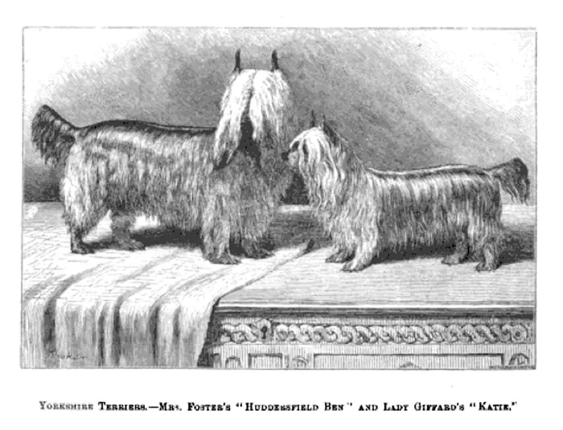
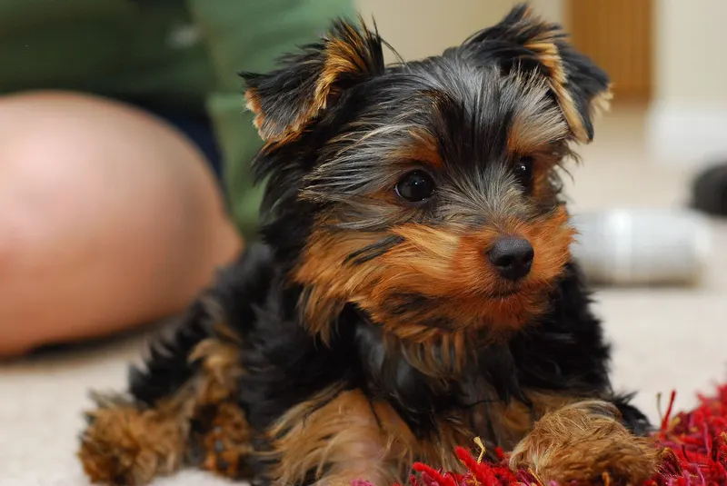
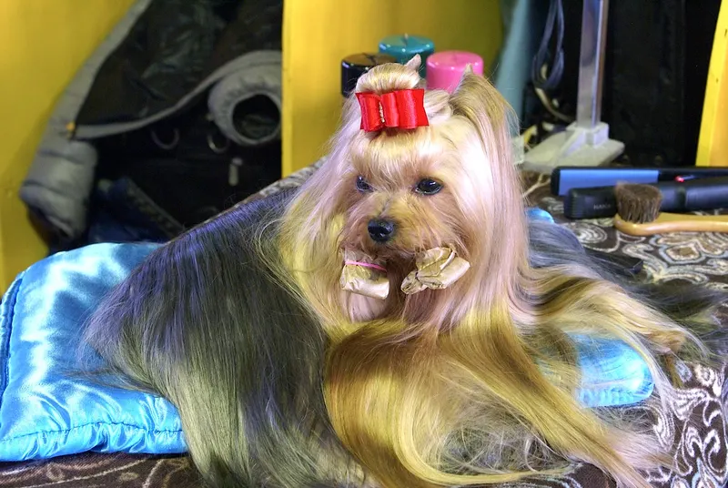
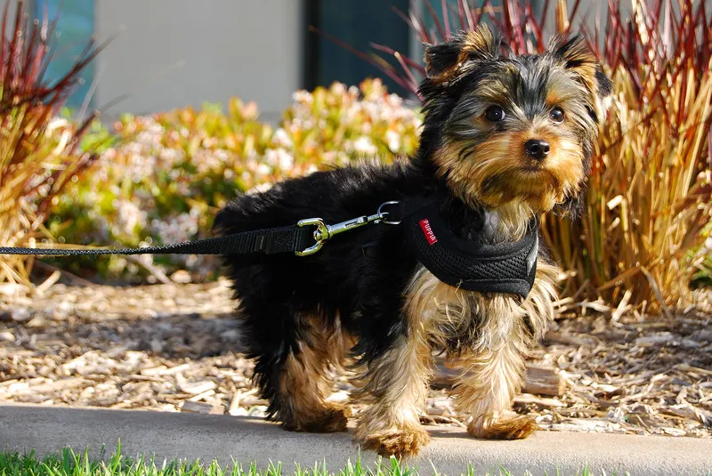

Raça inglesa · século XIX
Yorkshire Terrier
Antes de ganhar laços de fita e colo, o Yorkie caçava ratos nas tecelagens do norte da Inglaterra. Esta é a história de como um terrier de operário virou um dos cães de companhia mais populares do mundo.
Conhecer a origemFicha da raça
- Origem
- Yorkshire, Inglaterra
- Peso
- até 3,2 kg
- Expectativa de vida
- 13 a 16 anos
- Pelagem
- azul-aço e castanho
- Grupo FCI
- 3 · Terriers (padrão nº 86)
Origem
Das tecelagens de Yorkshire para o mundo
O Yorkshire Terrier nasceu da Revolução Industrial. Ele é resultado de cruzamentos feitos por trabalhadores, não por aristocratas, e foi criado para um trabalho bem concreto: caçar ratos.
-
Meados do séc. XIX
Os tecelões escoceses
Em busca de trabalho nas fábricas de lã, famílias escocesas migraram para os condados de Yorkshire e Lancashire. Com elas vieram pequenos terriers, como o Clydesdale, o Paisley e o Skye Terrier.
-
Os primeiros cruzamentos
Um caçador de ratos
Nas tecelagens e nas minas, os ratos destruíam mercadorias. Os operários cruzaram esses terriers com cães locais, como o Waterside Terrier, buscando um cão pequeno, valente e rápido o bastante para entrar em qualquer canto.
-
1865
Huddersfield Ben, o "pai da raça"
Nasce em Huddersfield o cão que definiria o tipo da raça. Vencedor de dezenas de exposições, Ben foi muito usado na reprodução, e boa parte dos Yorkshires de hoje descende dele. Viveu só até 1871.
-
1870
Ganha o nome
Até então chamados de "Broken-haired Scotch Terriers", os cães passaram a ser conhecidos pelo condado onde a raça tinha sido aprimorada: Yorkshire.
-
1886
Reconhecimento oficial
O Kennel Club britânico reconhece a raça. Na era vitoriana, o Yorkie já tinha deixado as fábricas para virar o cão de colo das famílias ricas, com a pelagem longa como marca registrada.
-
1944
Smoky, a heroína de guerra
Encontrada por soldados americanos na Nova Guiné, a Yorkshire Smoky ajudou a passar cabos de telégrafo por um tubo estreito numa pista aérea nas Filipinas, poupando dias de trabalho perigoso. Depois da guerra, visitava hospitais e é lembrada como uma das primeiras cadelas de terapia.

Aparência
Pequeno no tamanho, longo na pelagem
O Yorkshire é um dos menores cães do mundo. O padrão da raça pede até 3,2 kg, com corpo compacto, cabeça pequena e orelhas em "V" sempre em pé.
A marca da raça é o pelo: fino, liso e sedoso, com textura parecida com a do cabelo humano. Ele cresce sem parar e cai pouco, por isso muitos donos preferem a tosa curta no dia a dia e deixam a pelagem longa para as exposições.
A cor muda com a idade
Os filhotes nascem pretos e castanhos. Com o tempo, o preto do corpo clareia até o azul-aço, enquanto cabeça, peito e patas ficam num castanho dourado. A cor definitiva pode levar até três anos para aparecer.


Temperamento
Um cão grande num corpo pequeno
O passado de caçador ainda aparece no comportamento. O Yorkie é carinhoso com a família, mas não se acha pequeno.
-
Corajoso
Enfrenta cães muito maiores sem hesitar. Vale cuidado nos passeios para ele não comprar briga que não pode vencer.
-
Alerta
Late para avisar de qualquer novidade. É um ótimo "alarme", e com treino desde cedo o latido fica sob controle.
-
Apegado
Gosta de estar perto do tutor e sofre se fica sozinho por muito tempo. Combina com quem passa boa parte do dia em casa.
-
Esperto e teimoso
Aprende rápido, mas tem opinião própria. Responde melhor a treinos curtos, com petiscos e elogios, do que a broncas.
Cuidados
O que um Yorkshire precisa

- Pelagem
- Escovação diária se o pelo for longo, para não formar nós. Banho a cada uma ou duas semanas.
- Dentes
- A boca pequena acumula tártaro com facilidade. Escove os dentes várias vezes por semana e leve ao veterinário com regularidade.
- Passeios
- Use peitoral: a raça tem tendência a colapso de traqueia, e a coleira aperta justamente essa região.
- Articulações
- A luxação de patela (o joelho "sai do lugar") é comum em raças pequenas. Evite que ele pule de lugares altos, como sofás e camas.
- Alimentação
- Filhotes muito pequenos podem ter queda de açúcar no sangue (hipoglicemia). Ofereça várias refeições ao longo do dia.
- Frio
- Com pouco peso e sem subpelo, sente frio com facilidade. Em dias frios, uma roupinha ajuda de verdade.
Este site é informativo e não substitui a orientação de um médico-veterinário.
Curiosidades
Você sabia?
6,3 cm
era a altura do menor cão já registrado: um Yorkshire Terrier que viveu em Blackpool, na Inglaterra, nos anos 1940. Ele pesava pouco mais de 100 gramas.
21 m
era o comprimento do cano, com só 20 cm de diâmetro, que Smoky atravessou puxando um cabo de telégrafo. Sem ela, os soldados levariam dias cavando sob risco de ataque.
3 anos
é o tempo que a pelagem pode levar para atingir a cor definitiva de adulto, do preto do filhote ao azul-aço.
Galeria
Retratos de Yorkshires
Clique numa foto para ampliar.